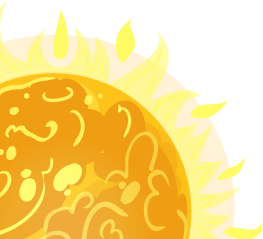
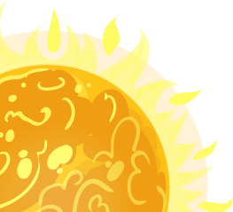

Earth is the third planet from the Sun and home to all known life. While large volumes of water can be found throughout the Solar System, only Earth sustains liquid surface water. Approximately 70.8% of Earth's surface is made up of the ocean, dwarfing Earth's polar ice, lakes, and rivers. The remaining 29.2% of Earth's surface is land.
Mercury is the smallest planet in the Solar System and the closest to the Sun. Its orbit around the Sun takes 87.97 Earth days, the shortest of all the Sun's planets. Mercury orbits the Sun within Earth's orbit as an inferior planet; its apparent distance from the Sun as viewed from Earth never exceeds 28°. From Earth, the planet telescopically displays the complete range of phases, similar to Venus and the Moon, which recurs over its synodic period of approximately 116 days.Mercury is most often the closest planet to Earth.
Venus is the second planet from the Sun. It is sometimes called Earth's "sister" or "twin" planet as it is almost as large and has a similar composition. As an interior planet to Earth, Venus appears in Earth's sky never far from the Sun, either as morning star or evening star. Aside from the Sun and Moon, Venus is the brightest natural object in Earth's sky, capable of casting visible shadows on Earth at dark conditions and being visible to the naked eye in broad daylight.
The Moon is Earth's only natural satellite. It is the fifth largest satellite in the Solar System and the largest and most massive relative to its parent planet, with a diameter about one-quarter that of Earth. The Moon is a planetary-mass object with a differentiated rocky body,Its surface gravity is about one-sixth of Earth's at 0.1654 g, with Jupiter's moon Io being the only satellite in the Solar System known to have a higher surface gravity and density.
Jupiter is the fifth planet from the Sun and the largest in the Solar System. It is a gas giant with a mass more than two and a half times that of all the other planets in the Solar System combined, while being slightly less than one-thousandth the mass of the Sun. Jupiter is the third brightest natural object in the Earth's night sky.
Saturn is the sixth planet from the Sun and the second-largest in the Solar System, after Jupiter. It is a gas giant with an average radius of about nine and a half times that of Earth.It has only one-eighth the average density of Earth, but is over 95 times more massive. Saturn's interior is most likely composed of a rocky core, surrounded by a deep layer of metallic hydrogen, an intermediate layer of liquid hydrogen and liquid helium, and finally, a gaseous outer layer. Saturn has a pale yellow hue due to ammonia crystals in its upper atmosphere.
Uranus is the seventh planet from the Sun. Uranus has the third-largest planetary radius and fourth-largest planetary mass in the Solar System. The planet is similar in composition to Neptune, and both have bulk chemical compositions which differ from those of the other two giant planets, Jupiter and Saturn (the gas giants). For this reason, scientists often distinguish Uranus and Neptune as "ice giants".
Neptune is the eighth planet from the Sun and the farthest known planet in the Solar System. It is the fourth-largest planet in the Solar System by diameter, the third-most-massive planet, and the densest giant planet. It is 17 times the mass of Earth, and slightly more massive than its near-twin Uranus.
Neptune is the eighth planet from the Sun and the farthest known planet in the Solar System. It is the fourth-largest planet in the Solar System by diameter, the third-most-massive planet, and the densest giant planet. It is 17 times the mass of Earth, and slightly more massive than its near-twin Uranus.

 
